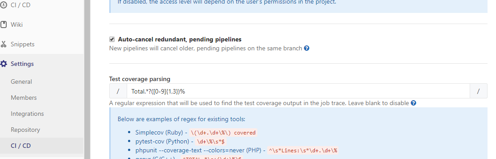
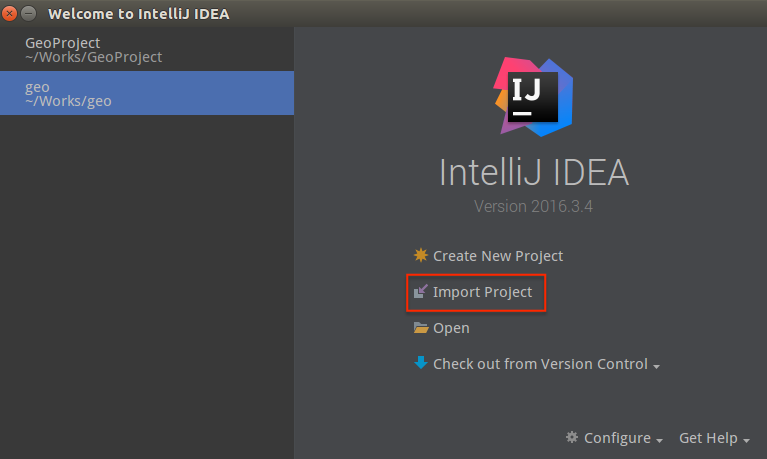

1. SUT
Description:
The system to be tested for this lab is Geo, an open source Java framework for geohashing. You can download
GeoProject form our GitLab
.
Please go to the GitLab of our course and register your account.
Use your full name (e.g., ¤ý¤p©ú) and student ID (e.g., 107598001) to register.
After registering, please sign in and fork the GeoProject into your account.
Also, please install git on your computer. The Git tutorial can be found in this website.
In the setting of
project
Members, please add the account of TA as Developer
to your project ( as shown below).
To prevent others from accessing your project, you have to set the project visibility to Private in Setting -> General -> General -> Permissions -> Project visibility.
To show the pipeline and coverage badge on README, you need to follow the settings below.
In your own GeoProject repository, go to
Setting -> CI/CD -> General pipelines settings and copy the code of Pipeline status and Coverage report to
README.md.
Setting -> CI/CD -> General pipelines settings -> Test coverage parsing
, set your coverage parsing to
Total.*?([0-9]{1,3})% .

Then you will see the pipeline status and coverage information on the index of project.
It will run CI and update the status information automatically after pushing your code to GitLab.
2. Test Environment
Please use
IntelliJ IDEA as you IDE, and import the GeoProject as follow:

3. Test Suite Generation
You will be required to implement some unit tests for several classes in this project according to the specifications.
You can create a test as the figures below:
And select testing library for
JUnit4(please clicked Fixed button if JUnit4 library not found in the module)
While designing and implementing your test cases, you may need to look up some information of each class in the Javadoc of GeoProject.
4. Test Plan
To begin with, a test plan must be created first. You must document the test plan in your lab report.
The test plan should include a brief description about the requirements of the test, the
strategy and
activities you plan to perform to meet the requirements, and the criteria to complete the test. (one
page would be sufficient for the test plan)
Carry out your test plan. To keep your workload manageable, we would like you to create test cases for 15 out of 50 methods (38 methods of com.github.davidmoten.geo and 12 methods of com.github.davidmoten.geo.mem). Choose 15 methods to test and create test cases for them. Try to keep each test case in a separate JUnit test method if possible.
Push your code to the repository when part of the project is doon. And observe the status of CI. You shoule do that at least three or more times.
5. Code Coverage
Click
View -> Tools Windows -> Gradle
to Open gradle tool windows.
test -> jacocoTestReport.
After doing the previous tasks, you should get the test report in the directory build -> jacocoHtml -> index.html.
You can open the index.html file in browser, it may look like the following figure.
6. Lab Submission
The Lab report must include (but not limit to) the following sections: (
sample Lab report)
1. Test Plan: briefly describe test requirements, planed test activities, and success criteria for the test.
2. Test Design : for the method under test, provide the objective, input, and expected output of the
test cases.
3. Test Result: for each method under test, provide the test results (in terms of Pass/Fail or screenshots
for each test case associated with the method under test.
4. Test Coverage: provide statement code coverage for each method under test and the overall statement
coverage for the test.
5. The screenshots of
CI/CD -> Pipelines
for showing 3 or more of different CI testing.
Please convert your Lab report to .pdf file, .docx file will not be accepted.
The Lab report must put in the corresponding directory in your project (e.g. GeoProject -> LabReport -> Lab1).
Make sure you have pushed your code and Lab report on the
GitLab successfully.
Finally, you must open an new issue on TA's GeoProject with the following information and format to notify TA that you have done your lab.
TA would check your homework on GitLab.